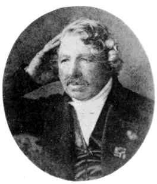

기술과 디지털 · 도구와 발명
다게레오타입 — 빛으로 만든 모습은 어떻게 사라지지 않게 되었을까
1839년 사진술 공개와 한 장의 금속판에 남은 이미지

카메라에 들어온 빛이 모습을 만든다는 것과 그 모습을 오래 남긴다는 것은 다른 문제다. 1839년 프랑스에서 공개된 다게레오타입은 빛의 흔적을 금속판에 고정하는 방법으로 주목받았다. 사진의 시작을 단 한 번의 셔터 소리처럼 상상하면 그전에 이어진 실험도, 그 뒤에 남은 제약도 놓치게 된다. 무엇을 보았느냐만큼 어떻게 남겨 다른 사람에게 보여 주느냐가 중요했다.
01. 카메라 안의 모습은 이미 알려져 있었다
어두운 공간으로 들어온 빛이 바깥 풍경의 상을 만든다는 원리는 사진술 이전에도 쓰였다. 카메라 옵스쿠라는 그 상을 관찰하거나 그림을 그리는 데 도움이 되는 도구였다. 하지만 눈앞에 나타난 상 자체가 영구적인 기록은 아니었다.
빛에 반응하는 물질을 이용하면 다른 길이 열렸다. 문제는 반응을 일으키는 데서 끝나지 않았다. 원하는 모습을 얻은 뒤에도 빛에 계속 반응하면 그림이 변하거나 사라질 수 있었다. 노출과 보존은 함께 풀어야 할 과제였다.
상이 생기는 광학적 장치와 그 상을 남기는 감광 재료를 구분하면 사진술의 새로움이 더 정확하게 보인다. 이미지를 본다는 경험 자체가 처음인 것은 아니었다. 사람이 따라 그리지 않아도 흔적이 남도록 만드는 단계가 새로운 과제였다.
02. 다게르 이전과 주변에도 실험이 있었다
다게르는 니에프스와 이어진 연구의 흐름 속에 있었다. 빛으로 이미지를 얻으려는 노력은 한 사람이 아무 배경 없이 시작한 일이 아니었다. 재료와 처리 방법을 바꾸며 이미지를 남기는 여러 시도가 사진술의 토대를 만들었다.
따라서 다게르의 이름이 널리 알려졌다고 해서 그를 모든 사진 원리의 단독 발명자로 부를 수는 없다. 새로운 기술의 이름은 종종 협업과 선행 연구보다 간단하게 남는다. 이름을 기억하면서도 그 뒤의 실험을 함께 살펴야 한다.
03. 1839년 공개는 기술의 사회적 사건이었다
1839년 프랑스에서 다게레오타입의 원리와 방법이 알려지면서 사진술은 공적인 관심을 받았다. 무엇이 가능한지에 대한 소식뿐 아니라 어떻게 만드는지에 대한 지식이 퍼졌다. 설명을 접한 사람들이 각지에서 직접 시도할 수 있게 되었다.
공개는 곧바로 누구나 쉽게 좋은 사진을 만든다는 뜻은 아니었다. 장비와 재료, 처리의 숙련이 필요했다. 기술을 알리는 결정과 그 기술을 일상에서 다루기 쉬워지는 과정 사이에는 여전히 거리가 있었다.
04. 금속판 한 장에 직접 모습이 남았다
다게레오타입은 은을 입힌 금속판을 이용했다. 빛을 받은 뒤 현상과 정착을 거쳐 이미지를 남겼다. 초기 공정에는 오늘날 안전하게 따라 해서는 안 되는 유해 물질도 쓰였다. 역사적 원리를 이해하는 설명과 가정에서 재현하는 조리법은 다르다.
완성된 판은 그 자체가 하나의 이미지였다. 종이 사진의 원판처럼 같은 사진을 여러 장 인화하는 방식과 차이가 있었다. 다게레오타입의 섬세한 모습에는 매력이 있었지만, 한 장을 널리 나누는 일에는 다른 해결책이 필요했다.
다게레오타입을 감상하는 경험도 종이 위 인쇄물과 같지 않았다. 금속판의 표면에서 이미지를 보는 물질적 조건이 있었다. 한 장의 사진이라는 말 안에도 판의 재료와 보는 방법에 따라 다른 물건이 존재했다.
05. 찍히는 시간은 사진 속 사람을 바꾸었다
초기의 사진술에서는 충분한 빛을 모으는 시간이 중요한 제약이었다. 움직이는 대상은 안정된 이미지를 얻기 어려웠다. 인물을 찍을 때 자세를 유지해야 하는 이유도 단순한 유행이 아니라 기술의 조건과 연결되어 있었다.
이후 감도를 높이고 노출 시간을 줄이는 개선이 이어졌다. 같은 카메라라는 이름 아래에서도 담을 수 있는 장면은 달라졌다. 사진의 표현은 기계와 분리된 취향만이 아니라 재료가 허락하는 시간과도 관계가 있었다.
06. 종이의 음화는 다른 가능성을 보여 주었다
같은 시대의 탤벗이 발전시킨 종이 기반의 음화와 양화 방식은 복제의 길을 열었다. 밝고 어두움이 뒤집힌 원본에서 다른 이미지를 얻는 구조였다. 금속판의 직접 이미지와는 장점과 제약이 달랐다.
사진의 역사를 한 방식이 정해진 결승선으로 달려간 이야기로 볼 수 없는 이유다. 선명함, 촬영의 편의, 복제의 가능성 가운데 무엇을 중요하게 보느냐에 따라 선택이 달라졌다. 이후의 사진은 이런 문제를 함께 다루며 발전했다.
후대에 한 장의 원본에서 복수의 사진을 얻는 방식이 중요해졌다고 해서 초기 금속판 사진을 실패한 시제품으로만 볼 이유는 없다. 당시 이용자가 원한 이미지와 감상 방식 속에서 가치가 있었다. 기술의 평가는 나중에 살아남은 방식만으로 결정되지 않는다.
07. 빛의 흔적에도 판단이 들어갔다
사진은 손으로 그린 그림과 다른 방식으로 대상을 남겼다. 그렇다고 찍힌 한 장이 그 장면의 모든 진실을 담는 것은 아니다. 어디를 향하고 언제 노출하며 무엇을 프레임 밖에 둘 것인지는 여전히 사람이 결정했다.
다게레오타입의 등장은 이미지를 만드는 능력과 이미지를 믿는 방식을 함께 바꾸었다. 빛이 직접 남긴 흔적이라는 특징을 이해하려면 그 흔적이 만들어진 조건도 알아야 한다. 사진의 정확함은 사진을 질문 없이 받아들여도 된다는 뜻이 아니었다.
이야기의 바탕이 된 자료
- John Werge, The Evolution of Photography (1890), daguerreotype / Talbot / chronological record ↗확인일 2026-11-13
카메라 옵스쿠라와 감광·정착의 구별/니에프스와 다게르/1839공개/은판·유해 물질·노출 제약/탤벗 음화-양화와 복제. 유해 공정 재현법과 민족별 최초 경쟁은 제외.